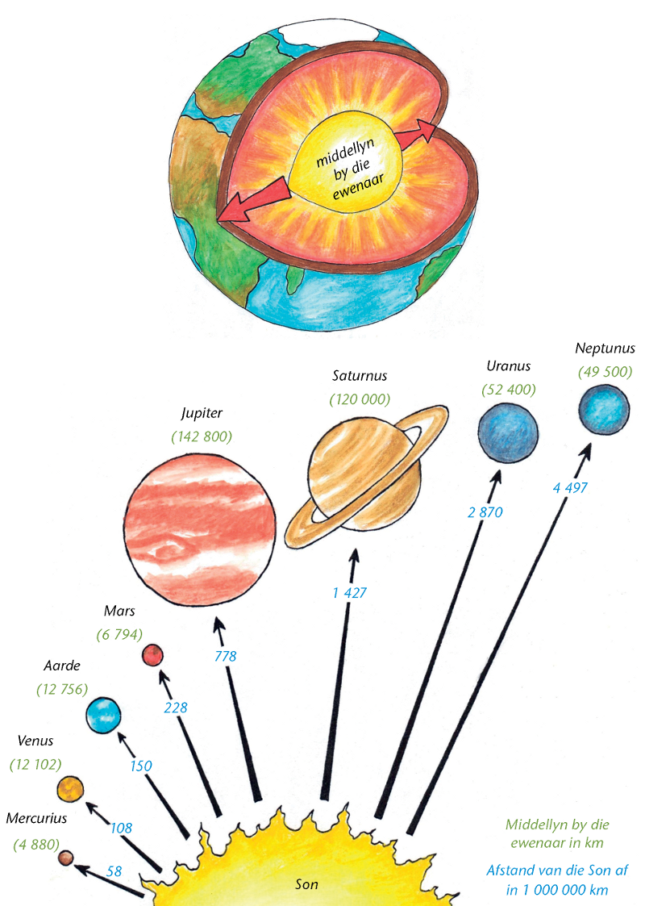

In hierdie hoofstuk gaan jy meer leer oor telgetalle. Jy sal leer oor verskillende maniere om telgetalle as ’n som of ’n produk uit te druk. Jy sal leer oor verskillende maniere om berekeninge te doen en verskillende maniere om jou werk neer te skryf wanneer jy berekeninge doen. Jy gaan jou vaardighede om berekeninge te doen en probleme op te los, versterk.

Hersiening
Moet glad nie ’n sakrekenaar gebruik in afdeling 1.1 nie.
Bou getalle op en breek getalle op
Die
woord som
word gebruik om aan te dui dat twee of meer getalle bymekaargetel
moet word.